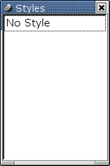
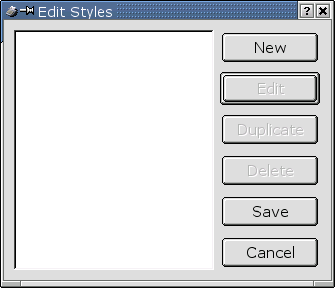
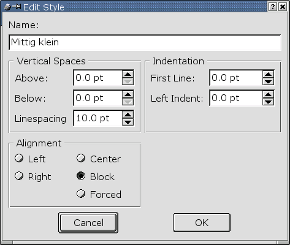
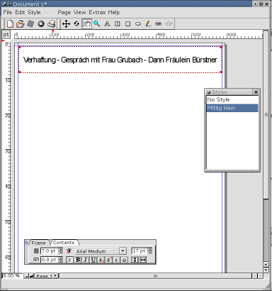

4.1.2 Die Absatz-Stile
Unter dem Menüpunkt "View" können Sie sich die Absatz-Stile einblenden lassen:

Ein Doppelklick in dieses Fenster bringt den Dialog zum Editieren der einzelnen Stile hervor:

Erstellen Sie mittels "New" einen neuen Stil:

Platzieren Sie nun den Text-Cursor an der entsprechenden Stelle in einem Textrahmen und wählen Sie
den zuvor angelegten Stil aus:
